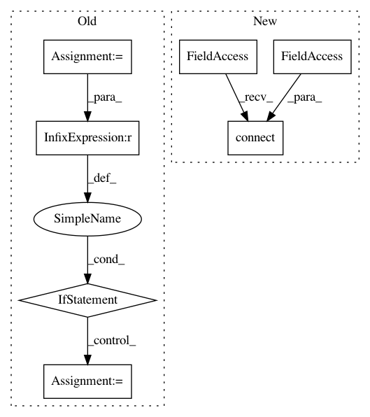

9418883d418ecccd7fe5da4dddffdc01064efb23,ilastik/workflows/carving/splitBodyCarvingWorkflow.py,SplitBodyCarvingWorkflow,__init__,#SplitBodyCarvingWorkflow#Any#Any#Any#Any#Any#,74
Before Change
if unused_args:
logger.warn("Unused command-line args: {}".format( unused_args ))
if parsed_args.split_tool_param_file is None:
logger.warn("Missing cmd-line arg: --split_tool_param_file")
else:
logger.debug("Parsing split tool parameters: {}".format( parsed_args.split_tool_param_file ))
json_parser = JsonConfigParser( SplitToolParamsSchema )
self._split_tool_params = json_parser.parseConfigFile( parsed_args.split_tool_param_file )
def onProjectLoaded(self, projectManager):
Overridden from Workflow base class. Called by the Project Manager.
After Change
//// Create applets
self.projectMetadataApplet = ProjectMetadataApplet()
self.dataSelectionApplet = DataSelectionApplet(self, "Input Data", "Input Data", supportIlastik05Import=True, batchDataGui=False)
opDataSelection = self.dataSelectionApplet.topLevelOperator
opDataSelection.DatasetRoles.setValue( ["Raw Data", "Pixel Probabilities", "Raveler Labels"] )
self.preprocessingApplet = PreprocessingApplet(workflow=self,
title = "Preprocessing",
In pattern: SUPERPATTERN
Frequency: 3
Non-data size: 7
Instances
Project Name: ilastik/ilastik
Commit Name: 9418883d418ecccd7fe5da4dddffdc01064efb23
Time: 2014-03-26
Author: bergs@janelia.hhmi.org
File Name: ilastik/workflows/carving/splitBodyCarvingWorkflow.py
Class Name: SplitBodyCarvingWorkflow
Method Name: __init__
Project Name: ilastik/ilastik
Commit Name: b71c79b8bb87791082c23837e472d97a7bfab712
Time: 2012-11-16
Author: bergs@janelia.hhmi.org
File Name: ilastik/applets/labeling/labelingGui.py
Class Name: LabelingGui
Method Name: _addNewLabel
Project Name: ilastik/ilastik
Commit Name: 6c331b84293bb6cf5dc5480037d69cc0ffb0c6fe
Time: 2013-09-18
Author: martin.schiegg@iwr.uni-heidelberg.de
File Name: ilastik/applets/thresholdTwoLevels/thresholdTwoLevelsGui.py
Class Name: ThresholdTwoLevelsGui
Method Name: setupLayers